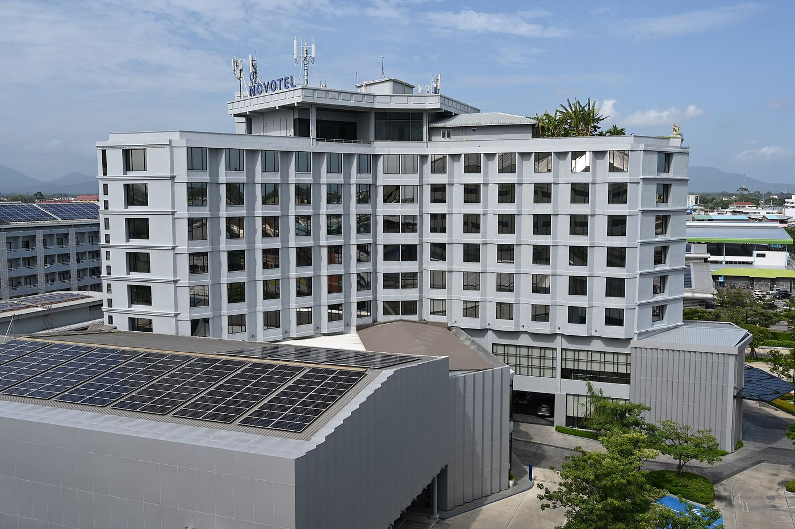
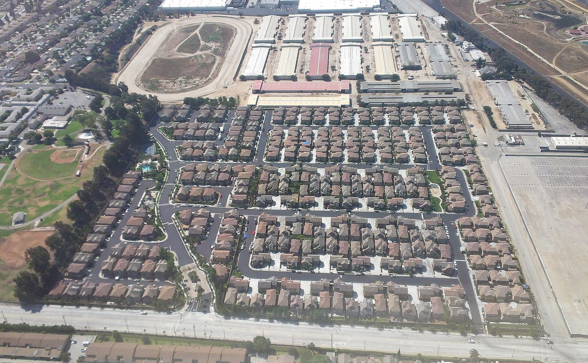
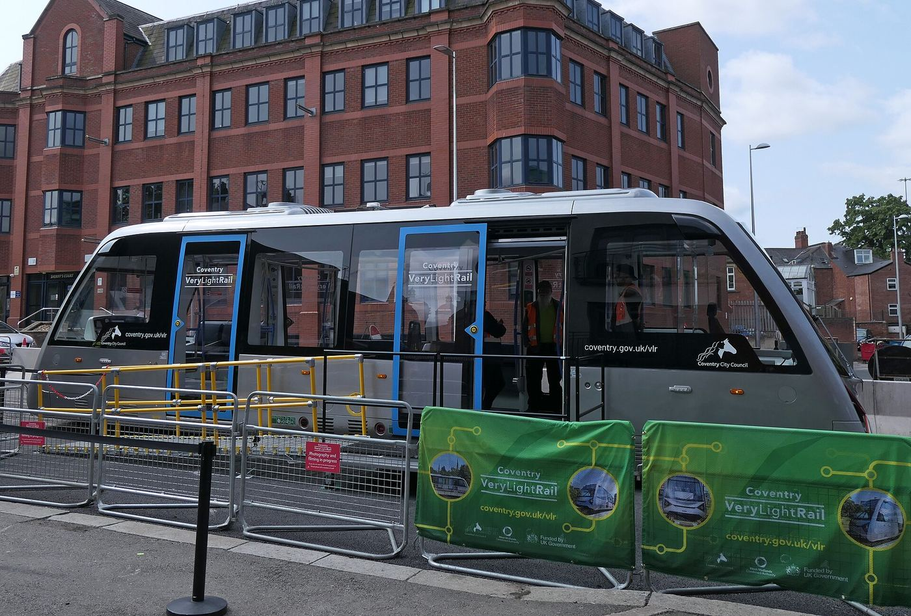

Module 6: Sustainable Cities, Smart Growth & Conservation
As global populations urbanize, the design of our cities and the stewardship of natural ecosystems determine our ecological future. Shifting away from car-centric sprawl requires mastering biodiversity protection, conservation economics, bioprospecting rights, smart growth planning, and sustainable transit networks.
Drag to orbit — a smart-growth city skyline at night, live 3D

Biodiversity & Conservation Economics
Wildlife corridors, national park ecotourism budgets in India, ecosystem services valuation, agricultural growth in Ethiopia, and debt-for-nature swaps.
Explore Biodiversity →Interactive Labs
Experiment with land value classification and explore the six zones of the urban transect planning model in real-time simulations.
Open Labs →Species, Ecosystems & Biodiversity Loss
Habitat degradation vs. loss, native species, E.O. Wilson's HIPPO drivers, coevolved relations, and global biodiversity definitions.
Study Species →Bioprospecting & Global Policy
Biopiracy versus bioprospecting, the 1992 UN Convention on Biological Diversity, and global biodiversity hotspots.
Examine Bioprospecting →Urban Sprawl & the Built Environment
Suburban land consumption (2M acres/yr), suburban growth metrics (300% surge), built environments, and problems with sprawl.
View Sprawl →Smart Growth & Transect Planning
Urban growth boundaries, multiuse buildings, brownfield redevelopment, urban infill, transect zoning, and transit-oriented design.
Dive Into Smart Growth →Biodiversity & Conservation Economics
Financing conservation and recognizing the economic value of nature are foundational to preserving global ecosystems.
Strips of natural habitat connecting isolated protected areas as a primary solution for decreasing animal isolation on reserves and mitigating habitat fragmentation.
In India, ecotourism provides approximately three-fourths (75%) of the annual operating budget for national parks and wildlife reserves.
Study Guide Source Citation: Verified from Lesson 3 study text covering national park operating budget financing.
The economic valuation of what land and natural systems provide for free when protected and restored to health (e.g., clean water filtration, carbon sequestration, pollination).
The United States loses approximately 2 million acres of agricultural and natural land each year to development and urban expansion.
Study Guide Source Citation: Verified from Lesson 5 study text covering annual land loss metrics.
Ethiopia is recognized as the leading African country promoting agricultural investment as a core component of its economic growth and poverty alleviation strategy.
Study Guide Source Citation: Verified from Lesson 4 study text covering agricultural investment leadership in Africa.
A financial policy mechanism where an international creditor cancels a portion of a developing nation's national debt in exchange for the nation establishing a domestic conservation program using local currency funds.
Evaluating the interplay between sovereign debt and ecological preservation reveals innovative conservation financing models.
Interactive Labs
Experiment with land valuation concepts and navigate the urban transect planning model dynamically.
Lab 1: Land Value Classification Lab
Classify real-world land scenarios into the correct valuation category to understand why ecosystems are often undervalued in commercial markets.
Lab 2: Urban Transect Zone Explorer
Adjust the slider to journey through the six zones of the urban transect planning model, from rural wilderness to the urban core.
Zone 1: Natural Zones
Unmodified natural wilderness and open landscape areas requiring complete ecological preservation.
Key Exam Feature: Open natural landscape preserving primary biodiversity.
Species, Ecosystems & Biodiversity Loss
Understanding the precise drivers of biodiversity loss and ecological definitions is critical for targeted conservation.
A significant qualitative change to an ecosystem as a result of human activities that reduces its ecological health (distinct from complete physical removal or fragmentation).
A species that is naturally occurring and indigenous to an ecosystem without human introduction. (Note: Native species is NOT part of E.O. Wilson's HIPPO acronym).
Biologist E.O. Wilson categorized the primary drivers of biodiversity loss as: Habitat loss, Invasive species, Pollution, Population growth, and Overharvesting. Native species is excluded from this list.
All life on Earth—encompassing the immense variety of all living species, plants, animals, fungi, and microorganisms, as well as ecosystems.
The affiliation and mutual survival reliance between animals and plants that depend on one another to survive (distinct from coextinction, which is their actual disappearance).
The commercial market valuation of what can be built on land (e.g., housing developments, commercial strip malls).
Bioprospecting & Global Policy
International treaties and bio-ethical frameworks govern how genetic resources are explored and protected.
The unauthorized extraction of biological resources and/or the patenting of processes based on traditional knowledge from indigenous communities without fair compensation.
In 1992, the United Nations developed an international agreement (Convention on Biological Diversity) at the Rio Earth Summit to conserve global biodiversity and share benefits fairly.
Study Guide Source Citation: Verified from Lesson 4 study text covering the 1992 Rio Earth Summit convention.
The lawful exploration of biodiversity for commercially valuable genetic and biochemical resources (such as medicinal compounds from rainforest plants).
Areas of high biodiversity that have at least 1,500 species of endemic vascular plants and have lost at least 70 percent of their original habitat.
Urban Sprawl & the Built Environment

Car-centric suburban expansion generates severe ecological fragmentation and resource consumption.
The residential area surrounding a city made up of mostly single-family homes.
Problems associated with urban sprawl include reducing green space, overrunning farmland, and destroying animal habitats. Blocking high views is NOT a problem associated with urban sprawl.
Between 1950 and 1990, the urban-suburban population in the United States experienced a massive increase of 300 percent.
Study Guide Source Citation: Verified from Lesson 5 study text covering U.S. suburban demographic expansion.
Smart Growth & Transect Planning

Advanced urban planning models replace sprawl with compact, efficient, transit-oriented communities.
In the urban transect planning model, the core is located at the center and represents the high-density downtown business district.
A set restriction (or line set by city planners) to distinguish between urban land and rural land and prevent outward sprawl.
Curitiba is globally considered to have the best Bus Rapid Transit (BRT) system in the world, rivaling subways at a fraction of the cost.
There are exactly three main retrofit strategies that help solve the ecological and social problems with car-centric suburbs (re-inhabitation, redevelopment, and re-greening).
Demolishing an existing building and reusing the site for another purpose.
Natural areas and open landscapes in the transect model are categorized as the rural zone.
A structural building that is used for both residential and commercial purposes.
All human-created surroundings—including buildings, parks, and infrastructure.
NASA established the NAUTILUS (Northeast Applications of Useable Technology in Land planning for Urban Sprawl) satellite imagery technology to monitor urban growth and land planning.
The use of vacant land for new construction within an already built-up area.
Copenhagen is famous for its pioneering municipal bike-share programs providing free and accessible bikes.
Study Guide Source Citation: Verified from Lesson 9 study text covering municipal cycling infrastructure.
Passenger automobiles account for approximately 10% of the world's carbon emissions from fossil fuels.
Study Guide Source Citation: Verified from Lesson 9 study text covering transportation carbon emission ratios.
Mixed-use residential and commercial communities designed to maximize access to public transportation.
An urban planning model that mirrors the layout of neighborhoods before urban sprawl.
In the transect model, the largest zone—consisting mostly of urban residential housing—is called the general zone.
The complete urban transect planning model is made up of exactly six distinct zoning categories.
An abandoned commercial or industrial site that is reused, often redeveloped into a multiuse building.
Module 6 Exam Simulator
This self-marking exam simulator draws 20 random questions from our comprehensive 108-question question bank covering every Module 6 concept. Click an answer to receive immediate feedback.
If you want to know more about this, visit these sites.
- Explore global biodiversity hotspots, conservation priorities, and protected area maps: Conservation International - Biodiversity Hotspots
- Review smart growth principles, urban planning models, and transect zoning frameworks: Smart Growth America - Program Hub
- Investigate satellite Earth observation data, land cover changes, and NAUTILUS imagery: NASA Earth Observatory - Land Cover & Urban Sprawl
- Examine sustainable transportation networks, Bus Rapid Transit, and urban mobility case studies: Institute for Transportation and Development Policy (ITDP)
- Learn more about industrial ecology, brownfield redevelopment, and sustainable urban design: U.S. EPA - Brownfields and Land Revitalization
- Access environmental science lessons on human populations, cities, and ecosystems: Khan Academy - AP Environmental Science & Human Geography